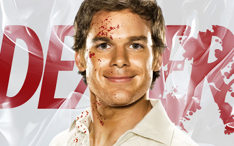

The #1 choice for journaling episodes
Future features: rating episodes, posting reviews, viewing other user reviews.
NEW ADDITIONS

Batman: The Animated Series
The Caped Crusader struggles to overcome his demons while battling Gotham's most notorious villains, including the Joker, Penguin and Harley Quinn.


House, M.D.
Hugh Laurie stars as Dr. Gregory House, an ornery physician who loathes his patients but is a genius at treating mysterious ailments.


Dexter
By day, mild-mannered Dexter is a blood-splatter analyst for the Miami police. But at night, he is a serial killer who only targets other murderers.